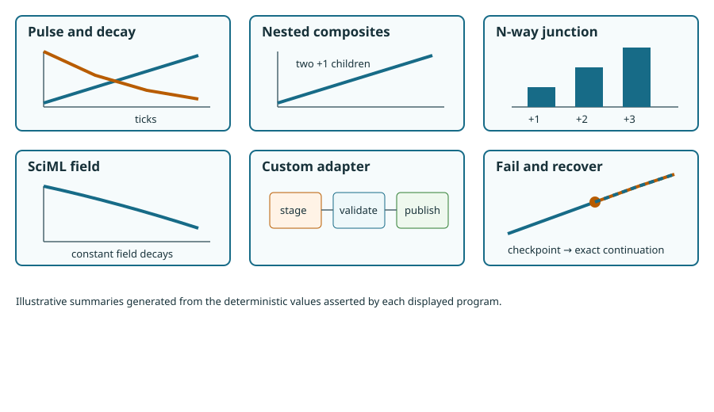

Reusable nested composites
Support level: qualified unpublished internal beta.
Outcome. Mount one open definition twice under different namespaces and join both explicit endpoints to one parent store.
Prerequisites. Compose and inspect a system.
Complete executed source
using ProcessBigraphs
import ProcessBigraphs: AbstractProcess, ports, semantic_version,
semantic_parameters, invoke
struct NestedIncrement <: AbstractProcess
amount::Int
end
ports(::NestedIncrement) = (
InputPort(Int, :state),
OutputPort(Int, :out; update_law=:add),
)
semantic_version(::NestedIncrement) = "1.0.0"
semantic_parameters(law::NestedIncrement) = (amount=law.amount,)
invoke(law::NestedIncrement, inputs, context) = InvocationResult((
emit(context, :out, AdditiveUpdate(), law.amount),
))
scale = TimeScale(1)
counter = compose(:ReusableCounter; scale) do child
state = store!(
child, :state,
LeafSchema(Int; default=0, update_law=:add),
)
actor = mount!(child, :increment, NestedIncrement(1))
attach!(child, actor, (state=state, out=state))
schedule!(child, actor, Every(Duration(1, scale)))
expose!(child, :state, state; role=:bidirectional)
end
system = compose(:NestedSystem; scale) do parent
shared = store!(
parent, :shared,
LeafSchema(Int; default=0, update_law=:add),
)
left = mount!(parent, :left, counter)
right = mount!(parent, :right, counter)
connect!(parent, left.state, shared)
connect!(parent, right.state, shared)
expose!(parent, :total, shared; role=:bidirectional)
end
runtime = initialize_runtime(compile(system))
run_until!(runtime, LogicalTime(3, scale))
result = (
total=current_snapshot(runtime)[path("shared")],
structure=ir_fingerprint(lower(system)),
execution=plan_fingerprint(compile(system)),
)
@assert result.total == 6
The two mounts share a definition but have distinct instance identities. Flattening retains their semantic namespaces and produces one execution plan.
Material defaults. Two children, amount 1, cadence 1, three ticks.
Expected result. Shared total 6.
Establishes. Reusable hierarchy, explicit endpoints, deterministic lowering.
Does not establish. Mounting does not clone mutable runtime state at authoring time and does not infer any connection.
Backend / runtime / seed. CPU serial runtime; no RNG draw.
Reproduction command. julia --project=lib/ProcessBigraphs/docs lib/ProcessBigraphs/docs/models/examples/nested_composites.jl
Next step. N-way junctions.